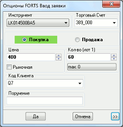
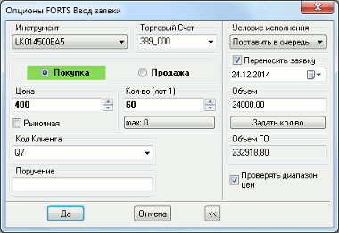

Ввод заявок на Срочном рынке FORTS
Окно в зависимости от настроек может иметь компактную (слева) или полную
(справа) форму. Вид окна переключается нажатием кнопки «>>». Формы
оптимизированы для легкого и быстрого ввода параметров и компактного
расположения на экране.

Заполнение формы заявки:
- «Инструмент» – выбор инструмента из списка инструментов данного класса. Чтобы найти инструмент
в списке, наберите с клавиатуры первые буквы его наименования (контекстный поиск
в выпадающих списках включается в меню Система/Настройки/Основные настройки..., раздел «Программа»).
- «Торговый счет» – код торгового счета, в отношении которого делается поручение.Регистр символов в поле имеет значение.
Если за пользователем закреплен один счет, то поле заполняется автоматически.
Если доступны несколько счетов, то требуется выбрать нужный счет
из списка или воспользоваться настройкой «Указывать счет депо по коду клиента»
(см. Настройки ввода заявки). О настройке
последовательности счетов в списке см. подробнее Настройка счетов.
- «Покупка» / «Продажа»
- направление операции .
- «Цена» – цена заявки, за одну единицу инструмента.
При выставлении заявки с признаком «Рыночная» требуется указать такую цену, не хуже которой должны исполняться заявки (полностью либо частично).
При включении признака «Рыночная» в пустое поле «Цена» подставляется значение «Максимально возможная цена», а при подаче заявки на продажу – «Минимально возможная цена» для данного инструмента (значение берется из Таблицы текущих торгов).
При отключении признака «Рыночная» в поле
автоматически подставляется значение цены, указанное в данном поле до
включения признака «Рыночная». При смене инструмента запомненное значение
сбрасывается.
- «Рыночная» – при установленном признаке и при наличии встречного предложения заявка исполняется по цене не хуже, чем значение, указанное в поле «Цена». Неисполненный остаток, на который отсутствует встречное предложение, снимается с торгов.
- Если при отправке заявки с признаком «Рыночная» поле «Цена» не заполнено или содержит значение «0», то сервер QUIK автоматически подставляет в поле «Цена» значение «Максимально возможная цена» для данного инструмента при отправке заявки на покупку и «Минимально возможная цена» при отправке заявки на продажу.
Если в сервере QUIK функционал автоматической
подстановки цены отключен, то такая заявка торговой системой не принимается.
- «Кол-во» - количество инструментов, выраженное в лотах. Количество инструментов в одном лоте указано в скобках.
- «max» – максимальное возможное количество лотов в заявке, рассчитанное из
величины доступных средств клиента с учетом всех комиссий. Нажатием на кнопку
указанное максимальное значение вводится в поле «Количество». Поле
отображается при включенном в настройках флажке «Рассчитывать доступное
количество» (см. Настройки ввода заявки).
- Значение поля не рассчитывается, если значение в поле «Цена» больше максимально возможной или меньше минимально возможной цены.
- «Код клиента» – идентификатор клиента в системе QUIK.
- «Поручение» – текстовый комментарий к заявке.
Дополнительные параметры:
- «Условие исполнения» определяет порядок обработки
остатка заявки при ее частичном исполнении:
- «Немедленно или отклонить» – заявка исполняется только полностью, т.е.
при наличии в торговой системе встречных заявок по цене, не хуже указанной и
с количеством инструментов, превышающим объем заявки.
- «Поставить в очередь» (по умолчанию) – неисполненный остаток
ставится в очередь с ценой, указанной в заявке. Если заявка рыночная, и
встречные заявки отсутствуют, то неисполненный остаток снимается с торгов.
- «Снять остаток» – неисполненный остаток снимается с торгов.
- «Переносить заявку» – признак выставления заявки с
условием исполнения до даты, указанной пользователем.
При установленном признаке поле для выбора даты
экспирации заявки становится доступным для редактирования.
- «Объем» - оценка заявки в денежном выражении.
Позволяет рассчитать «Количество» инструментов в заявке по известной сумме денег. Для этого нужно
ввести в поле «Объем» сумму денежных средств и нажать кнопку «Задать кол-во».
При этом в поле «Количество» выводится число, полученное в результате пересчета и
округленное вниз до ближайшего целого, а в поле «Объем» - денежная оценка
заявки при данном «Количестве».
Объем заявки рассчитывается по формуле:
«Объем» = «Количество» * «Стоимость шага цены» * («Цена» / «Размер шага цены»),
- «Объем ГО» – совокупный размер ГО, который блокируется по заявке. Объем ГО рассчитывается по формуле:
«Объем ГО» = «Количество контрактов» * «ГО* покупателя / продавца» *
(«Стоимость шага цены» / «Размер шага цены»)
- (*)
- Для опционов в случае продажи в качестве гарантийного обеспечения (ГО) учитывается параметр «БГОНП».
- «ГО покупателя / продавца» рассчитывается в единицах котирования инструмента.
- При покупке/продаже инструментов выше/ниже расчетной цены «ГО покупателя / продавца» пересчитывается с учетом разницы расчетной цены и цены сделки:
- Покупка выше расчетной цены:
«ГО покупателя / продавца» = («Цена сделки» – «Расчетная цена») + «ГО»
- Покупка ниже расчетной цены:
«ГО покупателя / продавца» = «ГО» – («Расчетная цена» – «Цена сделки»)
- Продажа выше расчетной цены:
«ГО покупателя / продавца» = «ГО» – («Цена сделки» – «Расчетная цена»)
- Продажа ниже расчетной цены:
«ГО покупателя / продавца» = («Расчетная цена» – «Цена сделки») + «ГО»
«Проверять диапазон цен» – если флажок включен, то цена заявки проверяется торговой системой на соответствие диапазону допустимых значений цены по этому инструменту. Доступно только для класса «Опционы FORTS».
-
- При заполнении формы заявки можно перемещаться между полями мышью, либо
клавишей «Tab» в одну сторону, или «Shift»+«Tab» в обратную сторону.
- Стрелки «вверх» и «вниз» в полях «Цена» и «Количество» служат для
изменения значений в этих полях при помощи мыши. Одно нажатие левой кнопкой
мыши на стрелке меняет значение на одну минимальную величину шага, а при
нажатой клавише «Ctrl» - на 10.
- Поля «Количество», «Код клиента», «Поручение» могут быть заполнены
автоматически. Подробнее см. Настройка
автозаполнения полей ввода заявки.
См. также п. Доступные функции